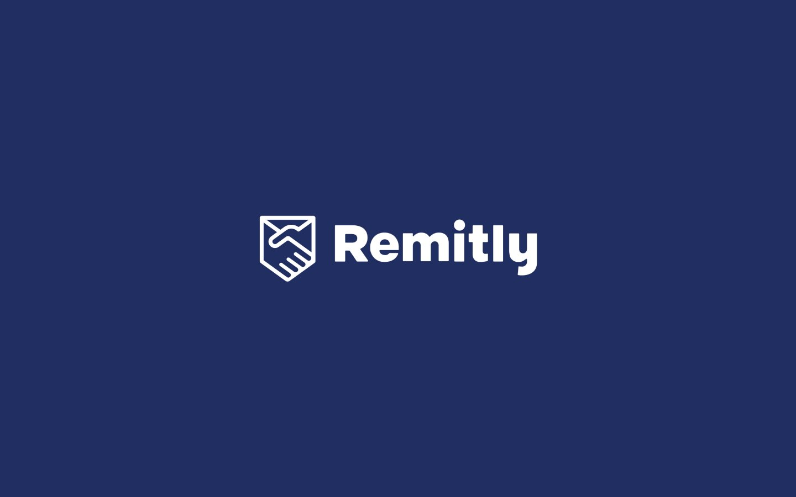

Diseño experiencias digitales claras, intuitivas y centradas en las personas. Transformo insights en productos funcionales y visualmente limpios.
Diseñador UX/UI con formación en ingeniería del diseño y background en diseño gráfico y fabricación industrial. Me enfoco en crear productos digitales funcionales, accesibles y centrados en el usuario mediante procesos iterativos y diseño basado en datos.
Una selección de case studies donde diseño, investigación y estrategia se unen.
Diseño de app desde cero para incentivar la compra en tiendas locales ante el cierre progresivo de pequeños comercios.

Rediseño del flujo de confirmación y seguimiento de transferencias para reducir fricción y desconfianza en usuarios frecuentes.
Rediseño conceptual para mejorar la experiencia en la app de pedidos de comida.